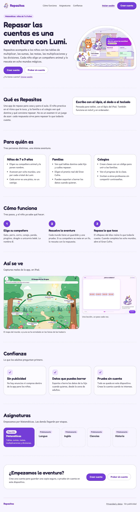

A · Cuento ilustrado
Cuento ilustrado
Evolución de la marca actual: arcos de cuento, Lumi como guía y el violeta de siempre, con el ritmo de un libro para leer despacio.
fondo
acento
texto
oro
Titulares: Fredoka · Texto: Andika